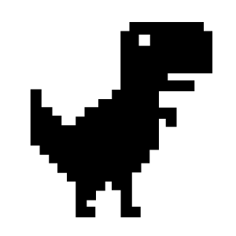

Hello!
I'm Gabriel Inculet, a passionate programmer and current Computer Engineering student seeking opportunities to grow and expand technical expertise. Eager to contribute to innovative projects, learn new technologies, and acquire advanced skills in software development.

Want to contact me? Reach me at gabriel.inculet@gmail.com
Background
I’m an aspiring software engineer and passionate programmer currently studying Computer Engineering at ISEC in Coimbra, Portugal. My journey into tech began with a solid background in IT Systems and evolved into a focused pursuit of game development and software engineering through academic projects, internships, and freelance work.
From 2022 to 2024, I worked as a freelance game developer, a role that solidified my love for building interactive experiences. I designed and implemented core gameplay systems, optimized performance, and collaborated on intuitive UI features. Game jams and creative side projects have also played a big role in sharpening my skills, pushing me to think critically and solve complex problems in fun and engaging ways.
In addition to game development, I’ve contributed to projects across web development and IT support. I’ve built full-stack web applications in team environments, worked with modern tools like React, and handled back-end logic and databases. My internships exposed me to enterprise software like Microsoft Dynamics 365 and helped me develop a practical understanding of scalable, maintainable code.
- JavaScript
- HTML
- CSS
- C#
- C++
- C
- Java
- SQL
- PHP
Languages:
- Unity
- Gamemaker Studio
- React
- Node.JS
- WPF / Winforms
- Git & Github
- Trello
- Figma
Frameworks/Tools:
- Web Design
- User Interface & User Experince (UI/UX)
- Gameplay
- Gamedesign
- Scripting